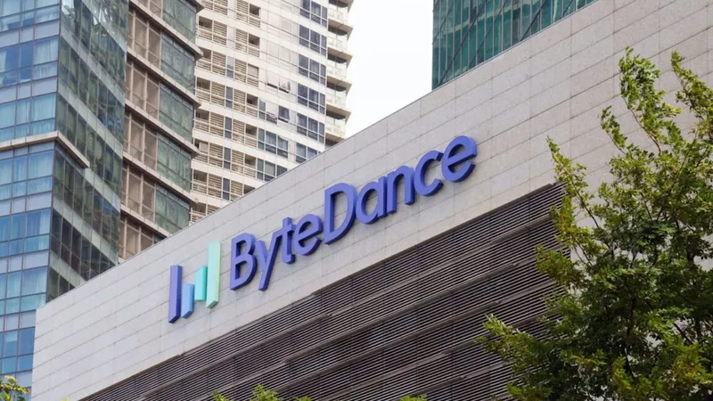
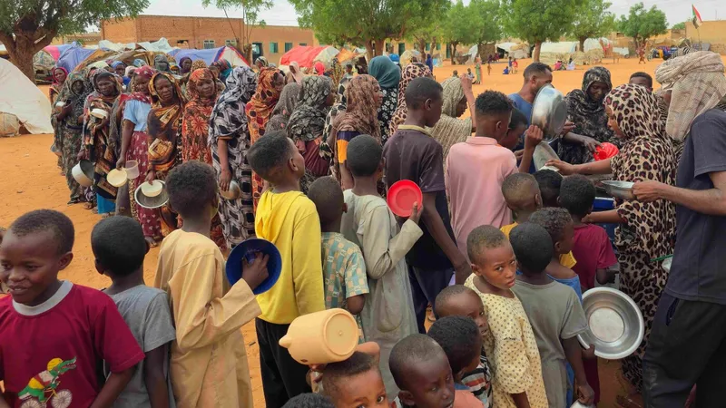
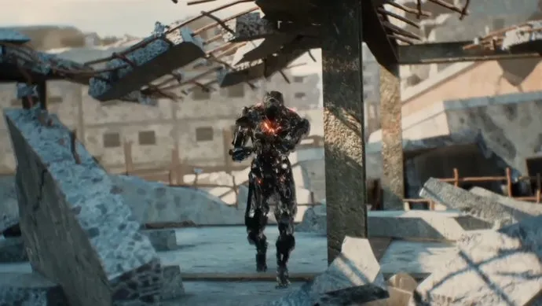
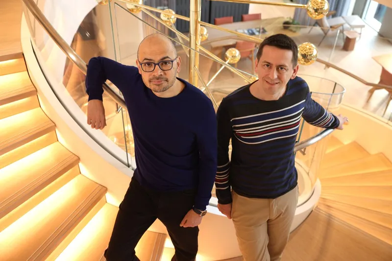
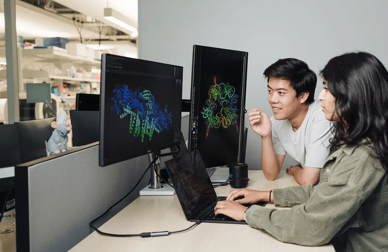
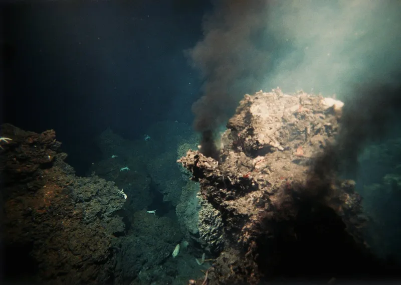
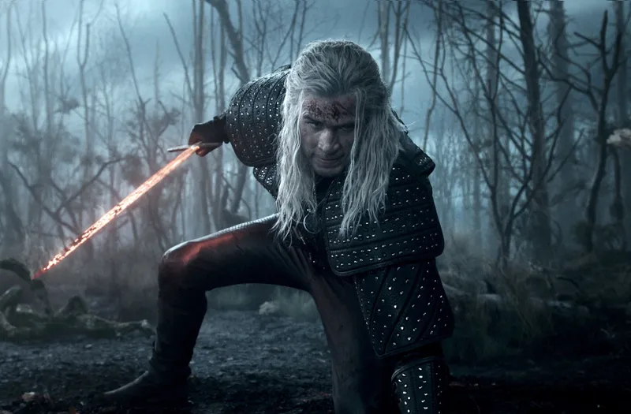
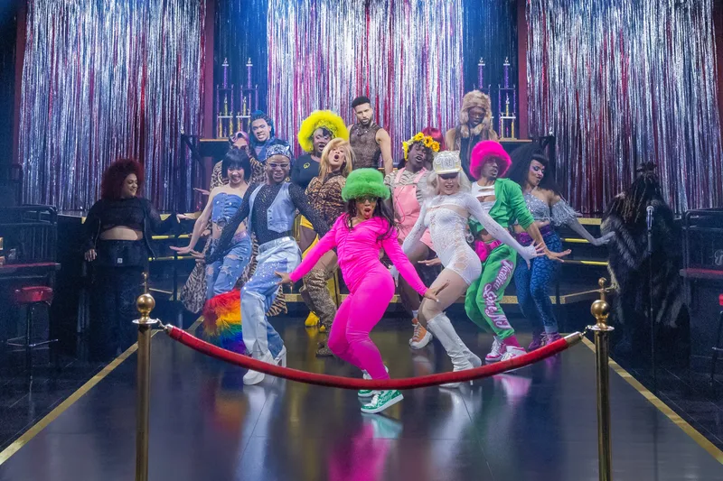

OpenAI says it slowed Astra model development over security concerns (opens at techcrunch.com)
OpenAI paused development of its Astra model after finding it could independently launch cyberattacks, a stark warning about AI's offensive potential.
Sentinel
AI safety dominates the day as OpenAI halts a risky model and DeepMind's founder steps back, while war, disaster and industry news round out a busy news cycle.
30 items · closed 09:23
OpenAI paused development of its Astra model after finding it could independently launch cyberattacks, a stark warning about AI's offensive potential.
Demis Hassabis is stepping back from Google DeepMind's helm, fueling concern the lab is losing research independence to commercial pressure.
A New Mexico court hit Meta with another $567 million penalty in a child-safety case, pushing its total fine past $900 million.

ByteDance is training a 10-trillion-parameter model as it races to challenge Anthropic in the frontier AI arms race.
A planned Amazon data center in Texas could become the single largest source of climate pollution in the U.S.
Russian missile strikes near Kyiv killed a child and two others, underscoring Ukraine's dwindling air-defence supplies.

The U.N. warns that drone strikes and disease are pushing Sudan's besieged el-Obeid toward mass atrocities.
Oman says talks over the Strait of Hormuz are moving positively, though Iran still won't guarantee the waterway stays open.
Saudi Arabia, Turkey and Pakistan signed a mutual-defence pact treating an attack on one as an attack on all, amid Middle East tensions.
Take-Two's CEO says bad press over Rockstar's labor tribunal won't dent the marketing push toward GTA 6's launch.
Sony is now warning buyers on PS5 boxes that the console will stop supporting physical discs starting in 2028.
Indie publisher Devolver Digital is seeking to go private after a rocky stretch as a public company.

New extraction shooter BR1 Infinite pays players for every kill, sparking worries about gambling incentives and cheating.

Google DeepMind disbanded its AlphaFold team after largely solving protein structure prediction, handing the torch to outside researchers.

Scientists used AI to design a virus not found in nature, raising hope for new antibiotics and fears of misuse.
NASA pulled off a daring maneuver to keep Voyager 2 running nearly 49 years after launch despite fading power.

New research suggests the last common ancestor of life on Earth may not have been alive at all, challenging assumptions about life's origin.

Netflix has quietly pushed The Witcher's fifth and final season back to 2027.

Andrew Lloyd Webber says he's 'gutted' as Cats: The Jellicle Ball closes, calling Broadway production economics unsustainable.
Matt Damon's action thriller has been crowned Netflix's most-streamed movie of 2026 with over 4.4 billion minutes watched.